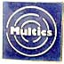
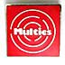
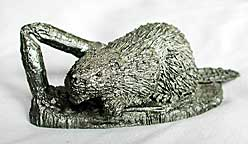
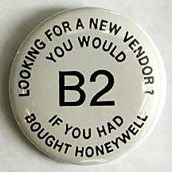
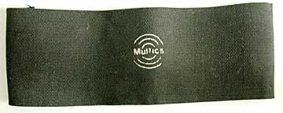

Loading
We had the usual number of trinkets and handouts.


Marketing got lapel pins.
These are from the late 70s or early 80s.
Garry Kaiser

We had T-shirts. Rick Kissel's is a Multics Man shirt. Katie's says "Multics Keeps It Up Longer". Multics Picnic, July 1979. (Click for a larger view.) THVV
I designed (executed) the Multics t-shirts. I did the Phx marketing t-shirt displayed by Sue Bender, as well as Multics Keeps It Up Longer and Steve Webber as Multicsman. I based the t-shirt drawing on Kenney's Multicsman comic. But in my version, it was a cartoon portrait of Steve Webber. My version of Multics man looked like Steve, because I knew Steve. David Rollow

Sue Bender, Liz Mullen, Kay Kaiser: Their shirts read Save Honeywell, Buy a Multics on the front, and Save Multics, Buy Honeywell on the back. (Click for a larger view.) THVV

Multics Time Sharing shirt, design by  Angus Macdonald, photo by Janet Dent.
(Click for a larger view.)
Janet Dent
Angus Macdonald, photo by Janet Dent.
(Click for a larger view.)
Janet Dent

Susan and I were going through some boxes of old clothes, etc., and came across this item, which I took a picture of. It was given to us by the PMDC folks when our first son Michael was born in July of 1980. (The phone is there to show the relative size and as a shameless plug for my current employer.) Multics didn't last long enough for Mike to become a Multician but he spends a lot of time with Linux and is employed as a network analyst with Global Crossing. (Click for a larger view.) Paul Benjamin

My  geek daughter (she is a college prof with a S.O. Comp Sci PhD who works at Lawrence Livermore) asked for this T shirt for Christmas.
The best part of this was that she wanted to more clearly understand my role on Multics.
Her strongest memories were of my Model 37 TTY clacking away in the family room in the evenings.
I was running Barry Wolman's hog so periodically the answerback drum would be fired up to simulate an interactive user rather than someone just using the PL1 compiler.
Anyway, we had a really pleasant conversation back and forth while she took notes.
It brought back a lot of very pleasant memories for me.
(Click for a larger view.)
Dick Snyder
geek daughter (she is a college prof with a S.O. Comp Sci PhD who works at Lawrence Livermore) asked for this T shirt for Christmas.
The best part of this was that she wanted to more clearly understand my role on Multics.
Her strongest memories were of my Model 37 TTY clacking away in the family room in the evenings.
I was running Barry Wolman's hog so periodically the answerback drum would be fired up to simulate an interactive user rather than someone just using the PL1 compiler.
Anyway, we had a really pleasant conversation back and forth while she took notes.
It brought back a lot of very pleasant memories for me.
(Click for a larger view.)
Dick Snyder


Pewter paperweight in the shape of a beaver, 1973. (Click for a larger view.) THVV
Honeywell Information Systems had an advertising campaign in the early 70s which consisted of photographs of sculptures of various animals,
made out of electronic parts. The animals were associated with various Honeywell computers.
Since the totem animal of MIT is the beaver (it's on the  class ring),
they made a beaver to associate with Multics.
Marketing also gave away nice heavy little pewter paperweights that represented the sculptures.
(The eagle, representing FSO, was highly prized.)
If you look very closely you can see the resistors and so on that the beaver's original was made of.
They handed these out at the legendary appreciation dinner for the Multics developers in Boston in 1973
with some little card thanking the Society Of Beavers.. we wondered if that was a dig.
class ring),
they made a beaver to associate with Multics.
Marketing also gave away nice heavy little pewter paperweights that represented the sculptures.
(The eagle, representing FSO, was highly prized.)
If you look very closely you can see the resistors and so on that the beaver's original was made of.
They handed these out at the legendary appreciation dinner for the Multics developers in Boston in 1973
with some little card thanking the Society Of Beavers.. we wondered if that was a dig.

Multics flying disc from a Multics Picnic in the 70s. (Click for a larger view.) THVV

iron-on patch from the 70s. (Click for a larger view.) Ron Riedesel

"Just found this, surprised it wasn't already on the web-site. All I can tell you about it is that it must have been made before I left at the end of 1967." (Click for a larger view.) Don Wagner

Some trinkets celebrated our triumphs, like the B2 certification.
Garry Kaiser

Some expressed bitterness at management.
Garry Kaiser
See the story of Multics security and B2.

Black armband from HLSUA 10/85
Garry Kaiser

Multics mug. Traditional gift at going away parties.
This one commemorated my transfer to PMDC in Phoenix, so it says ">udd>m>Van Vleck mv tvv.CISL =.Phoenix "
(Click for a larger view.)
THVV

Multics and STC ties, on the occasion of STC's centennial and its installation of Multics.
(Click for a larger view.)
David Warley

This tie is the runner-up in the 1967 MIT Project MAC Ugly Tie Contest.
(In the 60's, male office workers often wore white shirts and ties.
MIT sponsored research staff could be members of the MIT Faculty Club, which had good food and a nice bar... coat and tie were required,
but there was no requirement that the tie be pretty.)
We had an Ugly Tie Contest: the winner was a tie Mary Thompson found at the side of Main Street near the F&T;
Jerry Clancy took it home and Joanne washed and ironed it.
It was kind of green with a seaweed pattern, very ugly. After the tie was acclaimed as the ugliest,
Jerry put it back in the sewer, so it could continue its journey to the sea. That is why it is not shown here.
Dress codes began to relax in the 70s; CISL folks dressed more like undergraduates, and there were stories of
Honeywell executives visiting and being surprised by the casual dress of the development team.
When I worked on Multics in Phoenix, Multics development was in a separate building at Camelback Road.
The marketing folks and GCOS developers two miles up the freeway were still wearing ties, but
the Multicians were much more casual.
I remember one time when I was summoned to a meeting with management at the main building, and as I headed for my car,
someone said, "Aren't you going to wear a tie?"
I said, "You wanna play dressup, or you wanna play computers?"
and kept going.
(Click for a larger view.)
THVV


I had the "MULTICS" tag for California from 1983-1994 and for North Carolina from 1994-1998.
I finally gave it up because I went for 5 straight years without meeting anyone who knew what it was!
Of course, I'm in the Land of Red Hat down here and many of these kids barely even knew Unix.
(Click for a larger view.) Wayne Clark

On a trip to the Federal Systems Division offices in McLean,
I saw a latch hooked rug with the Multics symbol hanging in the front office.
It seemed inappropriate to me that FSD should have a Multics rug but CISL did not, so I decided to rectify that.
Whereas the FSD rug was made with heavy carpet yarn, I decided to make CISL's rug with lighter sport yarn so I could get more detail.
The rug was hooked onto a 5 hole per inch mesh, measuring 36" on a side.
The red yarn is official Multics red, but since Pantone didn't exist then,
I can't specify that red exactly.
It took me 400 hours to hand knot the rug, done during commuting from Natick to Cambridge.
The rug was in the CISL lobby at Cambridge Center.
(Click for a larger view.)
Keith Loepere
Mike Broussard and I did the FSD rug, around 1978 or 79. Unfortunately I don't have any pictures of it. Charlie Spitzer

As we wrote sections of the MSPM at Project MAC, each section was reviewed. Programmers wrote their documents in longhand and gave them to secretaries for typing. The typed copies were usually mimeographed and distributed to peers for review. (We had a Xerox machine but it was reserved for important use only, because it was expensive and sometimes caught fire.) Draft sections were stamped DRAFT in red. (Click for a larger view.) Tom Van Vleck

I have no official artifacts from my Multics experience at Bell Laboratories. However, I had constructed a "Pray for Multics" stamp that we used for out-going mail. After all these years, my wife mentioned it and then I instantly recalled exactly where it was stored - although it has been totally unused these last 46 years. It was a take off of the "Pray for peace" impression that the postal service added to letters and the like at that time (motivated by the Vietnam war I'm sure). (Click for a larger view.) Bob Rathbun